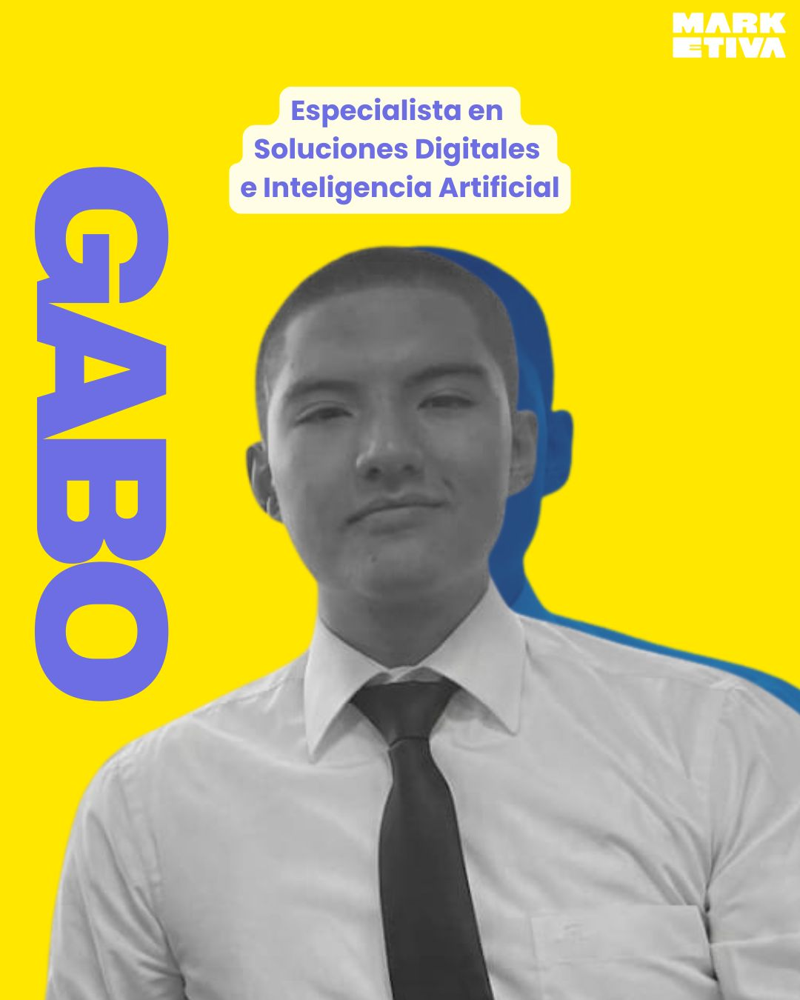
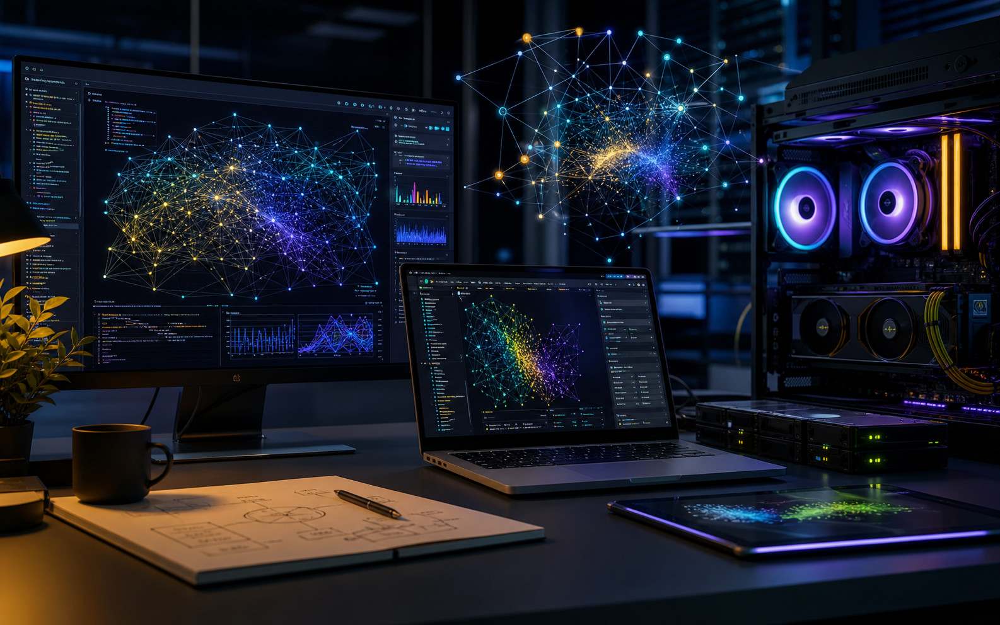
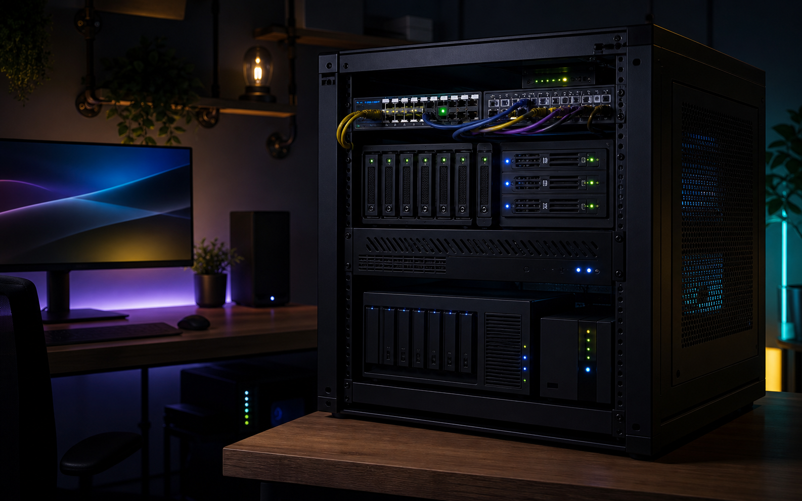
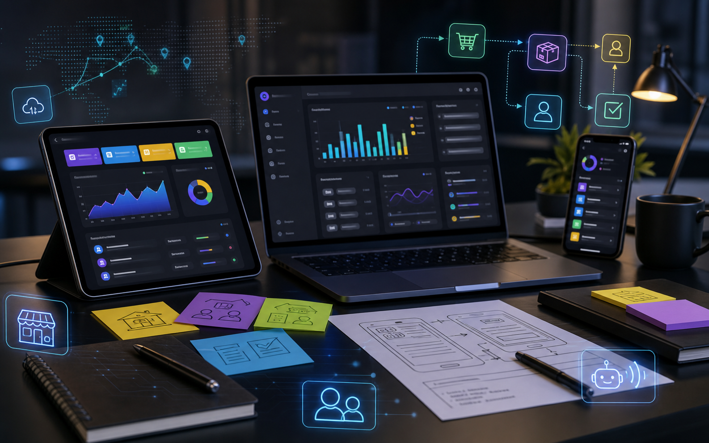

Negocios Digitales / IA Aplicada / Maker
Diego Gabriel Cortez Loayza
Diseño soluciones digitales con criterio de negocio, inteligencia artificial y mentalidad experimental: desde prototipos con modelos open weights hasta automatizaciones para pymes y servicios locales.

GLM 4.7
Fine tuning cloud
Home lab
Servicios locales
Sobre mí
Perfil entre estrategia digital, hardware y experimentacion.
Soy estudiante de Negocios Digitales con interes fuerte por la inteligencia artificial aplicada, la infraestructura personal y la adopcion tecnologica en negocios reales. Me gusta conectar lo practico con lo tecnico: entender una necesidad, prototipar rapido, medir si aporta valor y mejorar la solucion con herramientas modernas.
Trabajo explorando modelos open weights, flujos de inferencia, datasets curados, automatizaciones con IA y servicios montados en Linux. Mi enfoque combina curiosidad maker, pensamiento de producto y una obsesion sana por hacer que la tecnologia sea util para personas y empresas pequenas.
Stack y habilidades
Un perfil hibrido: IA, sistemas, negocio y prototipado.

Inteligencia Artificial
Fine tuning, Hugging Face, inferencia, modelos locales, datasets curados, evaluacion de respuestas y adaptacion de modelos open weights.
Linux e infraestructura
Home servers, contenedores, redes domesticas, servicios locales, backups, automatizacion y despliegues ligeros.
Negocios digitales
Diagnostico de procesos, herramientas SaaS, integraciones, automatizacion para pymes y mejora de operaciones con IA.
Maker y hardware
IoT experimental, impresion 3D, hardware, sistemas operativos, prototipos fisicos y aprendizaje por construccion.
Proyectos destacados
Proyectos tecnicos, utiles y con enfoque profesional.

Homeserver con servicios locales tipo streaming DIY
Laboratorio personal con servicios autoalojados para musica, video, archivos y paneles de administracion. Enfoque en aprender redes, contenedores, almacenamiento, seguridad basica y acceso remoto controlado.
- Organizacion de servicios por contenedores.
- Pruebas de rendimiento y disponibilidad en red local.
- Documentacion de mantenimiento y respaldos.
Fine tuning experimental de GLM 4.7
Entrenamiento exploratorio en GPUs rentadas para adaptar un modelo open weights a tareas concretas usando datasets curados. El foco fue comparar calidad de respuesta, costo de inferencia y consistencia del modelo.
- Preparacion y limpieza de datos de entrenamiento.
- Monitoreo de metricas, costos y checkpoints.
- Pruebas de inferencia para escenarios especificos.

Prototipos para negocios locales y pymes
Conceptos de aplicaciones moviles y servicios tipo SaaS para digitalizar flujos simples: registro de clientes, stock, respuestas automaticas, reportes y asistencia con IA.
- Mapeo de problemas reales antes de proponer tecnologia.
- Interfaces rapidas para validar ideas con usuarios.
- Automatizacion de tareas repetitivas con herramientas IA.
Intereses
La tecnologia tambien se entiende mejor tocando mundo real.
Agricultura
Vida rural
IA aplicada
Computacion
Hardware
Sistemas operativos
Impresion 3D
Maker
Basketball
Futbol
Cocina
IoT
Contacto
Disponible para proyectos, colaboraciones y experimentos serios.
Me interesan los retos donde la IA, los sistemas y el criterio de negocio puedan convertir una idea en una solucion que funcione.